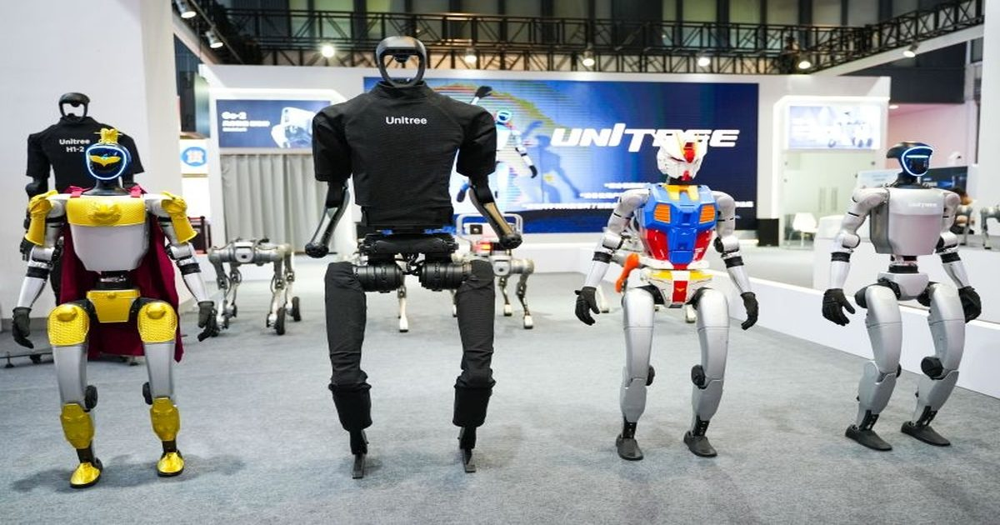

В пять раз быстрее: основатель Unitree ждёт прорыва в человекоподобных роботах уже через два года
Уже через пару лет человекоподобные роботы смогут успешно выполнять до 80 % команд на производстве и в быту, которые человек будет отдавать им в устной форме.
Так считает основатель китайской компании Unitree Robotics.
Ещё летом он полагал, что на это потребуется до десяти лет.
Источник изображения: Unitree Robotics